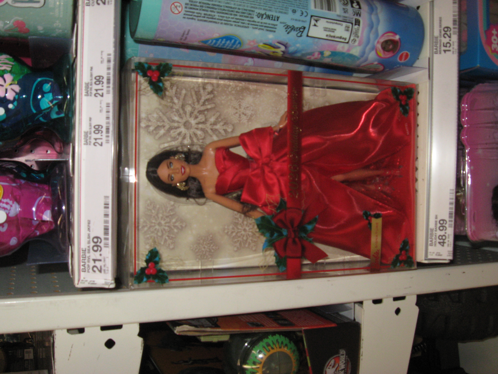
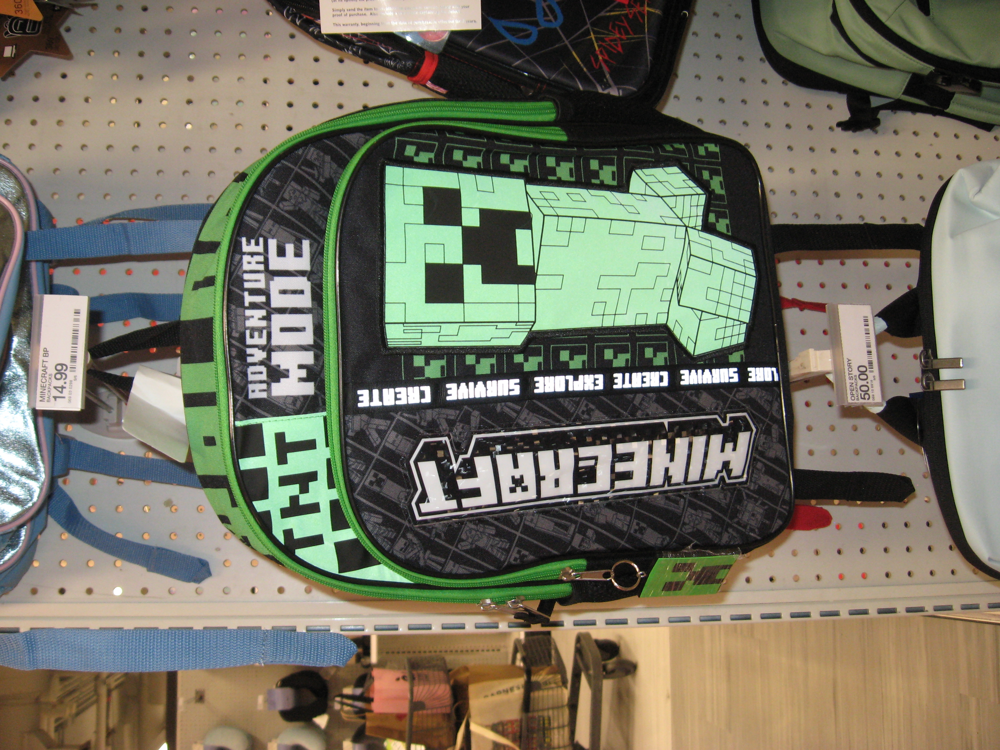
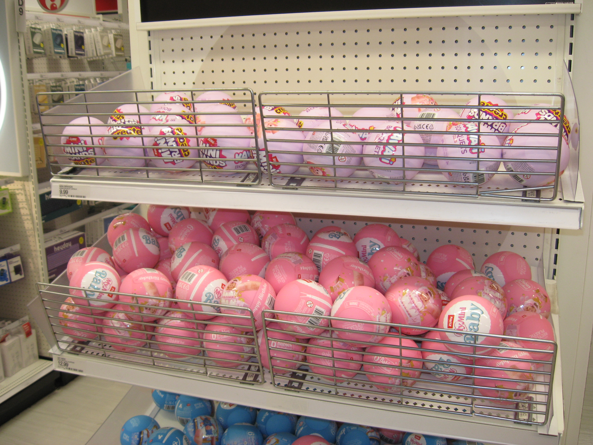
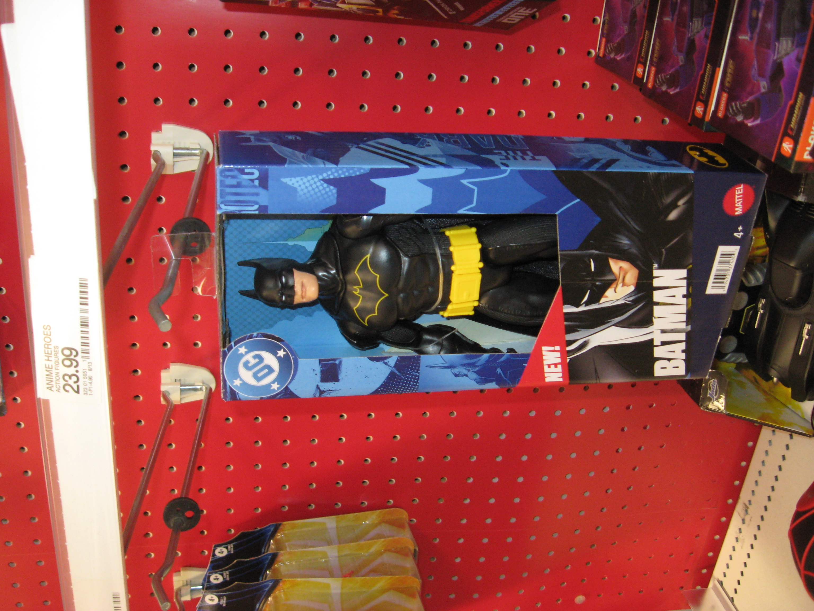
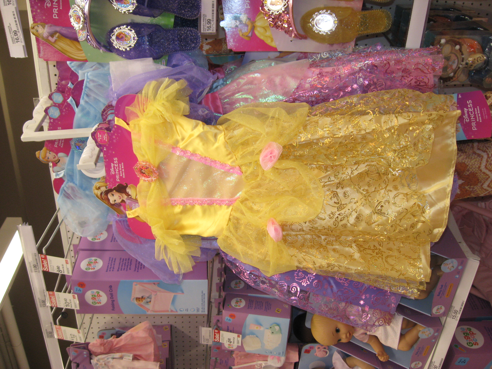
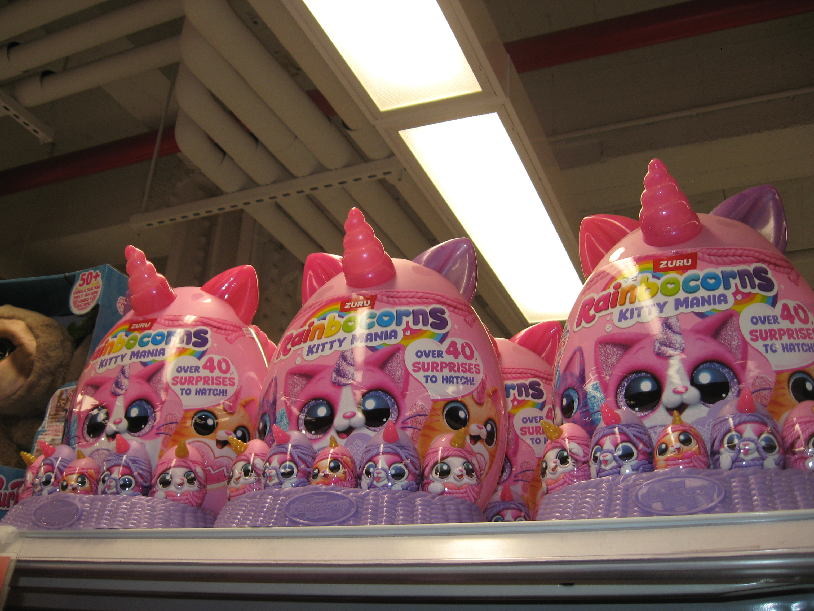

A series of photographs of children’s toys taken at Target using a CCD digital camera. These toys were either pointed out by children passing by to their parents or picked up by the children themselves. Most of the toys were not purchased by them at the time.
As soon as I saw Incantation I thought of a prevailing concept on the internet, both in China and the States, and that’s manifestation. One most popular subject in the world of manifestation is ‘manifesting an SP’, which stands for a specific person or special person. People are constantly repeating affirmations and doing visualization in the belief of by doing so, their loved ones will love them back and be the kind of person they want them to be. Despite the fact that it sounds insane, what it actually requires people to do is setting the goal of being loved by them out there and going back to focusing on their own lives. In other words, if you want to be loved, love yourself first. Then it comes to the notion of pampering or spoiling yourself, which a lot of people do not know how. People tend to think that it is because they were not treated with such manner wen they were children, so learning how to love oneself is about healing your inner child. Thus I had this question: if all of my desires as a kid was fulfilled, will I grow up to have the assumption that all of my needs will be satisfied? I imagine myself being a kid and going to the department store with my parents. So I chose Target in midtown because they have more toys there. I decide to take pictures of what I imagine myself would want as a kid. Turns out, I want everything and nothing. Then I noticed there were kids pointing out what they want to their parents. So I stuck around to see what they’re asking their parents to buy them, and took pictures of those toys. I used CCD digital camera as a nostalgic approach to display these pictures, and deliberately lowered the exposure. I would say the audience is everyone, I intend to let people go back in time as a kid and recall some of their inner desires that were not satisfied as a kid.
10 yo boy or girl, as written on his Threads bio. He works with digital media of commercial goods, human body and fashion. He explores the psychology and social issues behind behaviors and desires, and more abstractly their correlation with masculinity and femininity.